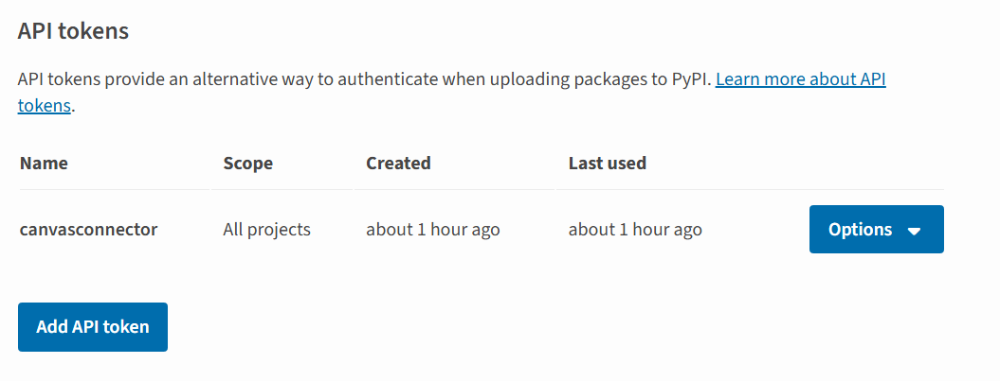
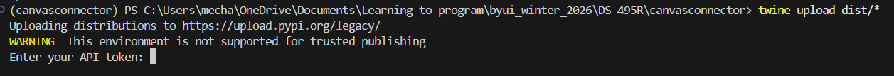
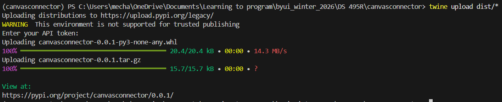
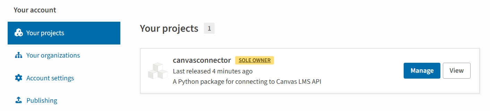
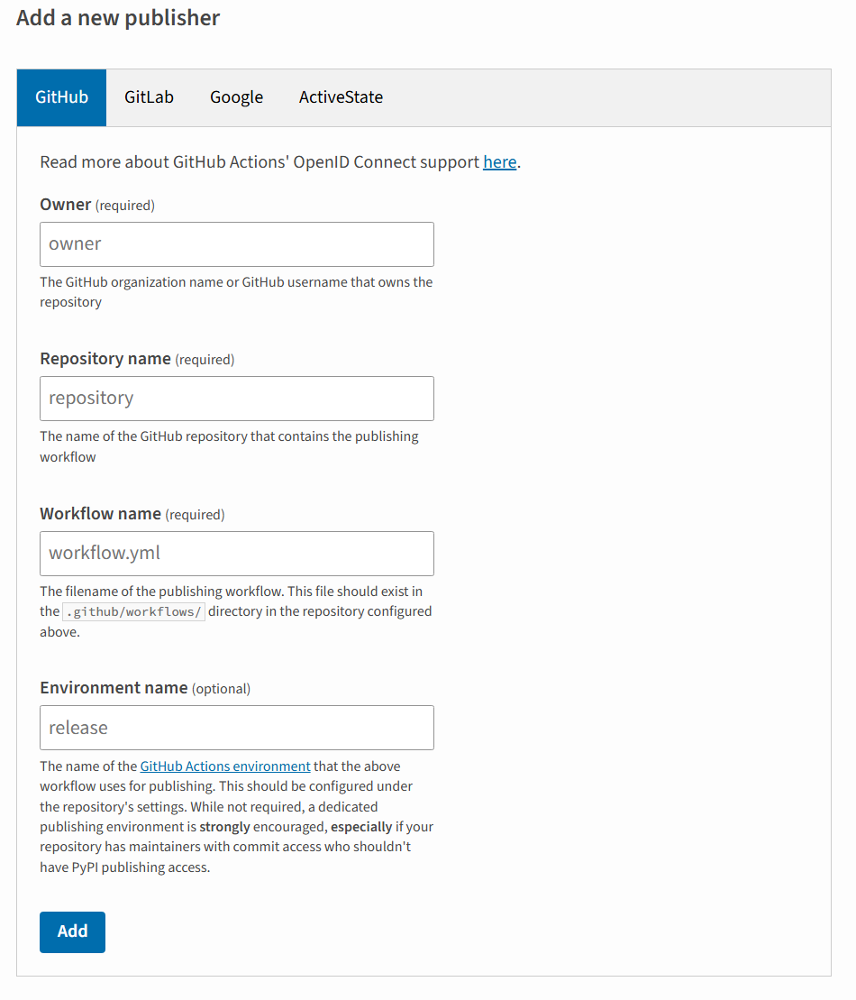
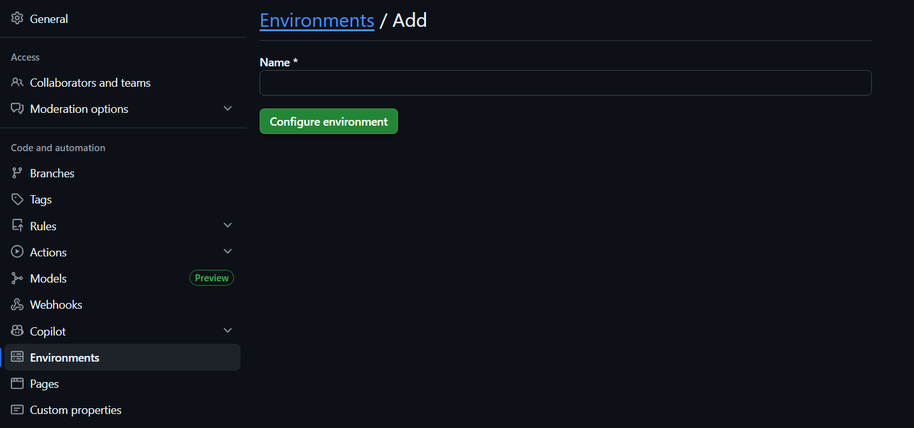
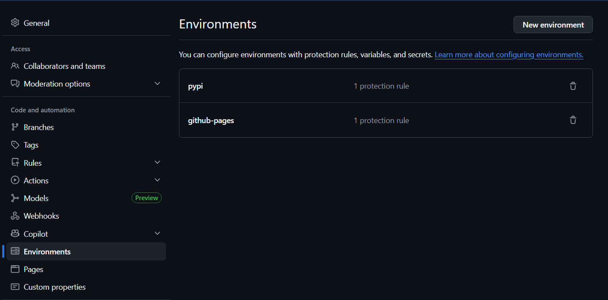
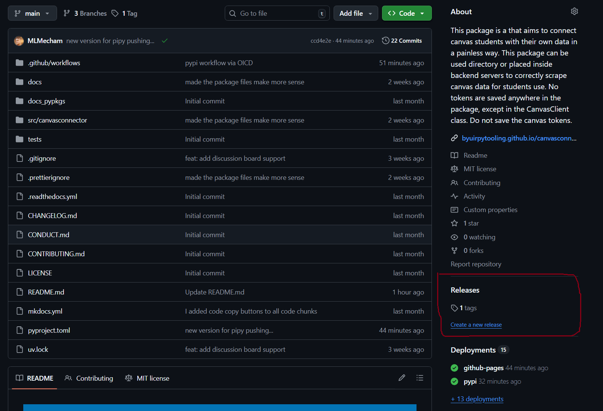
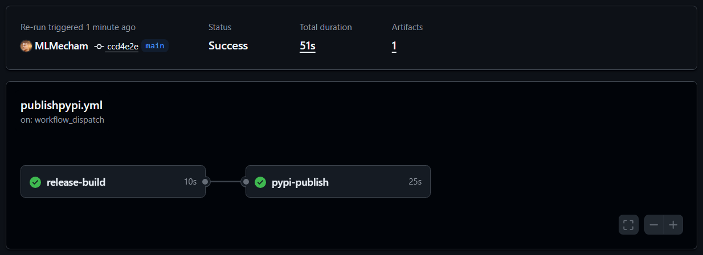
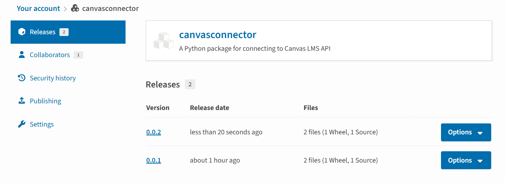

Once a package works well enough to share, the next step is getting it onto PyPI so anyone can install it with pip install or uv add. This post walks through how I published canvasconnector — a Python package for connecting to the Canvas LMS API — starting from a package that only lived on GitHub, all the way to automated releases through GitHub Actions using OIDC trusted publishing.
What You Need Before Starting
Before touching PyPI, the package should be installable from GitHub and have a working pyproject.toml. The canvasconnector README already had installation instructions pointing at the GitHub repo:
uv pip install git+https://github.com/byuirpytooling/canvasconnector.gitThat is fine for early development, but it is not discoverable and it requires users to know the exact GitHub URL. PyPI solves both of those problems.
You also need a PyPI account. Head to pypi.org, sign up, and verify your email before continuing. If it gives you recovery codes, save them somewhere safe or risk losing access.
The First Upload: Manual with Twine
PyPI requires the package to exist before you can configure automated publishing. So the first upload is manual. Start by building the package with uv:
uv buildThis creates a dist/ folder containing two files: a .whl wheel file and a .tar.gz source distribution. Then install twine as a global tool:
uv tool install twineGenerating an API Token
Before uploading you need an API token. Since the package does not exist on PyPI yet, you cannot scope the token to a specific project. Go to your account settings (not a project page — the project does not exist yet) and find the API tokens section. Click Add API token, name it something like canvasconnector, set the scope to All projects, and copy the token immediately. You only see it once.

Now upload:
twine upload dist/*Twine will prompt for a username and token. Enter __token__ as the username (literally, that string) and paste your API token as the password.


Once it completes, the package is live. You can verify by going to your PyPI account page.


At this point pip install canvasconnector works for anyone in the world. The manual upload is done and the API token can be deleted since we are about to replace it with something better.
Setting Up OIDC Trusted Publishing
OIDC (OpenID Connect) lets PyPI verify that a publish request is coming from a specific GitHub Actions workflow in a specific repository, without any stored credentials. No token to manage, rotate, or accidentally leak.
Step 1: Add a Trusted Publisher on PyPI
Now that the package exists, go to your package on PyPI, click Manage, then Publishing. This is where you configure the GitHub connection — it lives under the project, not your account settings. Add a new trusted publisher under the GitHub tab and fill in:
- Owner: your GitHub organization or username (for canvasconnector this is
byuirpytooling) - Repository:
canvasconnector - Workflow name:
publishpypi.yml - Environment name:
pypi

Make sure the owner matches the actual GitHub organization that owns the repo, not just your personal username. If they differ, the OIDC exchange will fail with an invalid-publisher error.
Step 2: Create a GitHub Environment
GitHub Actions needs a named environment called pypi to match what PyPI expects. Go to your repository Settings > Environments and create a new environment named pypi.


The environment acts as a verified identity context. When the workflow runs inside it, GitHub issues a token that PyPI can validate against the trusted publisher configuration you just set up.
Step 3: The GitHub Actions Workflow
Here is the full publishpypi.yml workflow:
name: Upload Python Package
on:
release:
types: [published]
permissions:
contents: read
jobs:
release-build:
runs-on: ubuntu-latest
steps:
- uses: actions/checkout@v4
- uses: actions/setup-python@v5
with:
python-version: "3.x"
- name: Build release distributions
run: |
pip install uv
uv build
- name: Upload distributions
uses: actions/upload-artifact@v4
with:
name: release-dists
path: dist/
pypi-publish:
runs-on: ubuntu-latest
needs: release-build
environment:
name: pypi
permissions:
id-token: write
steps:
- name: Retrieve release distributions
uses: actions/download-artifact@v4
with:
name: release-dists
path: dist/
- name: Publish release distributions to PyPI
uses: pypa/gh-action-pypi-publish@release/v1
with:
packages-dir: dist/The key parts are id-token: write in the permissions block, which enables OIDC, and environment: name: pypi, which scopes the workflow to the named environment. No password or secret is needed anywhere.
Publishing a New Release
With everything wired up, releasing a new version is a deliberate three-step process:
- Bump the version in
pyproject.toml(for example,0.0.1to0.0.2) - Commit and push the change
- Go to your GitHub repo and find the Releases section in the right sidebar, then click Create a new release

Create a tag matching the version (like v0.0.2), write release notes, and click Publish release. The workflow fires automatically from there.


The reason releases are manual rather than triggered on every push is intentional. A PyPI publish is permanent. You cannot overwrite or delete a version once it is live. Keeping the release step manual means you are making a conscious decision each time rather than accidentally shipping a half-finished commit.
Verifying the Install
After publishing, the fastest way to confirm everything works is to create a fresh project and install from PyPI:
mkdir canvasconnector-test
cd canvasconnector-test
uv init
uv add canvasconnectorThen run a quick import to confirm it loads correctly. For canvasconnector, a successful connection looks like this:
https://byui.instructure.com
America/Denver
Connected successfully as: Mitchell MechamIf that works, the package is live, installable, and functioning correctly for any user who finds it.
Summary
The full process from GitHub-only to automated PyPI releases:
- Build with
uv buildand upload manually withtwine upload dist/*using an API token - Create a PyPI account and generate a temporary API token under account settings scoped to all projects
- Once the package exists on PyPI, go to Manage > Publishing on the project page to configure OIDC trusted publishing
- Create a
pypienvironment in GitHub repository settings - Add the
publishpypi.ymlworkflow withid-token: writepermissions and no stored credentials - For each future release: bump the version, push, and create a GitHub Release to trigger the workflow
The canvasconnector package is available at pypi.org/project/canvasconnector and the full source is at github.com/byuirpytooling/canvasconnector.